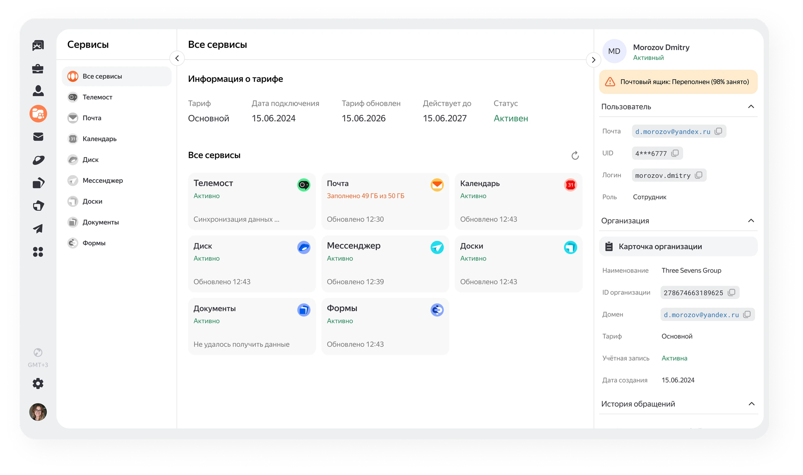
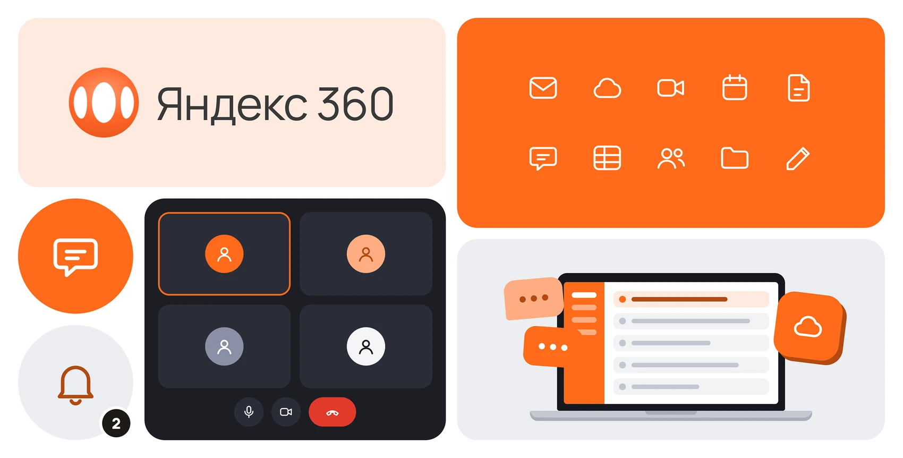

Гипотеза 1
Если сократить переходы
между админками,
это позволит ускорить
обработку обращений
Спроектировала единую панель саппорта Яндекс 360, которая сокращает
переходы между админками и ускоряет работу сотрудника

У продукта есть собственная служба поддержки, которая
помогает пользователям решать вопросы, связанные
с телемостом, почтой, мессенджером и другими сервисами.
Для обработки обращений у команды есть отдельная панель.
Чтобы обработать одно обращение,
сотруднику поддержки приходится
переключаться сразу между
несколькими административными
панелями. Это замедляет работу
и увеличивает время ответа
пользователю
Спроектировать единую
административную панель
по пользователю, которая
поможет сотруднику быстро
получить общую
информацию о пользователе
по сервисам Яндекс 360

Для начала я провела анализ текущей административной
панели, чтобы понять где саппорт теряет время.
Выводы:
На этом этапе я предположила, из каких шагов состоит работа
с запросом и что важно для быстрого решения.
Это позволило сформулировать несколько гипотез для
решения задачи.
Если сократить переходы
между админками,
это позволит ускорить
обработку обращений
Если собрать данные из
разных сервисов в одной
панели, сотруднику не
придётся переключаться
между ними — работа
саппорта упростится
Если показывать
информацию о тарифе
и сервисах, это позволит
сотруднику быстрее
выявлять проблему
пользователя
Посмотрела различные CRM системы, чтобы посмотреть, как
они организуют большое количество информации.
Отсюда выросло ещё несколько гипотез.
Размещение ключевой
информации о пользователе
рядом с чатом позволит
быстрее идентифицировать
пользователя
Группировка информации
по сервисам в отдельных
вкладках поможет быстрее
находить нужные данные
по пользователю
Добавление истории
обращений поможет быстрее
понять контекст проблемы
и избежать повторной
проверки фактов
Для приоритизации гипотез я использовала метод ICE (Impact,
Confidence, Ease)
Я провела юзабилити-тест с 8 участниками: каждый искал
заданную информацию в старой и новой версиях админ-
панели.
После переработки количество шагов сократилось в 2 раза.
Что удалось сделать:
Так как любое решение на практике подтверждается не только
удачным юзабилити-тестом, но и улучшением целевых метрик,
которые закладываются в начале работы, то в этом случае
мной были определены метрики успеха.
Число переходов между
админками на одно
обращение
Цель
Сокращение количества
переходов между
админками
Срок проверки
Подтверждено
юзабилити-тестом
Time to Resolution (TTR)
Цель
Уменьшение времени
обработки одного
обращения
Срок проверки
2–4 недели
Closed Conversations
на сотрудника за смену
Цель
Увеличение объёма
обработанных обращений
Срок проверки
1 месяц